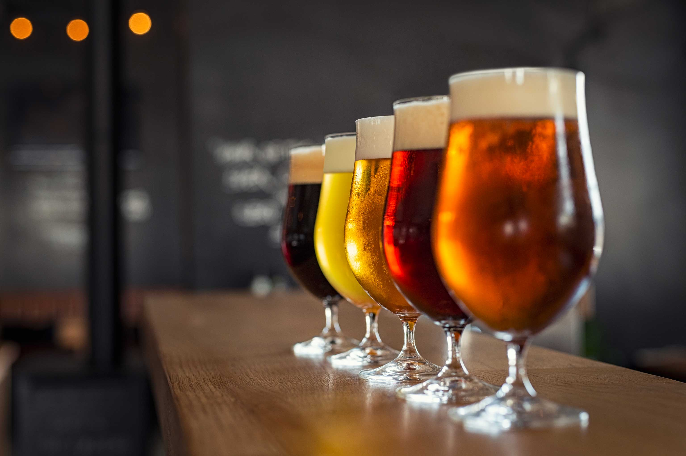
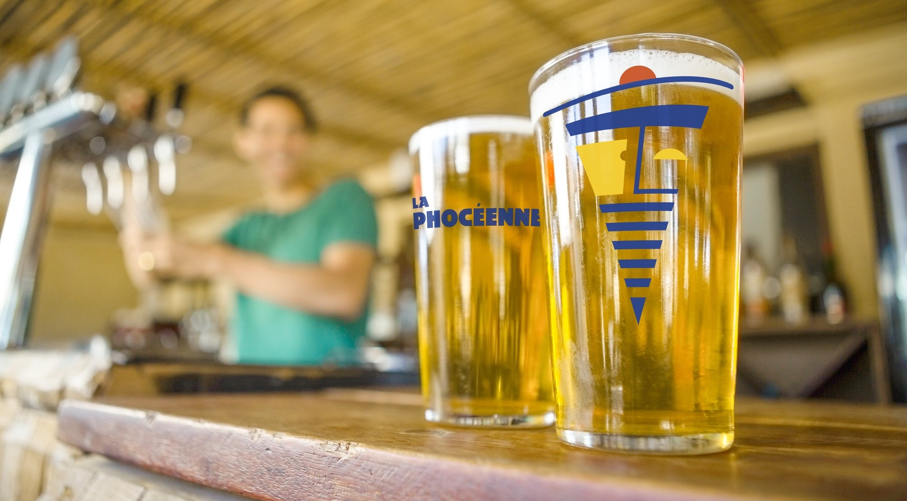

Passionnés par la bière artisanale depuis plus de 55 ans, nous mettons notre savoir-faire et notre expertise au service de votre plaisir.
Notre équipe dédiée est là pour vous conseiller et vous guider dans le choix de la bière qui correspond le mieux à vos goûts et vos envies.
Choisissez parmi notre sélection de bières artisanales.
| Nom de la bière | Prix |
|---|---|
| La P'tite Mousse | 1€ |
| L'Ambrée Tendre | 2€ |
| La Brune Mystère | 3€ |
| La Blonde Affaire | 4€ |
| L'Ambrée Royale | 5€ |
| La Brune Costaud | 6€ |
| La Blonde Élite | 7€ |
| L'Ambrée Suprême | 8€ |
| La Brune Fatale | 9€ |
| L'Impériale Brune | 100000€ |
Apprenez à brasser votre propre bière grâce à nos guides détaillés.
Contactez-nous pour toute question ou commande.